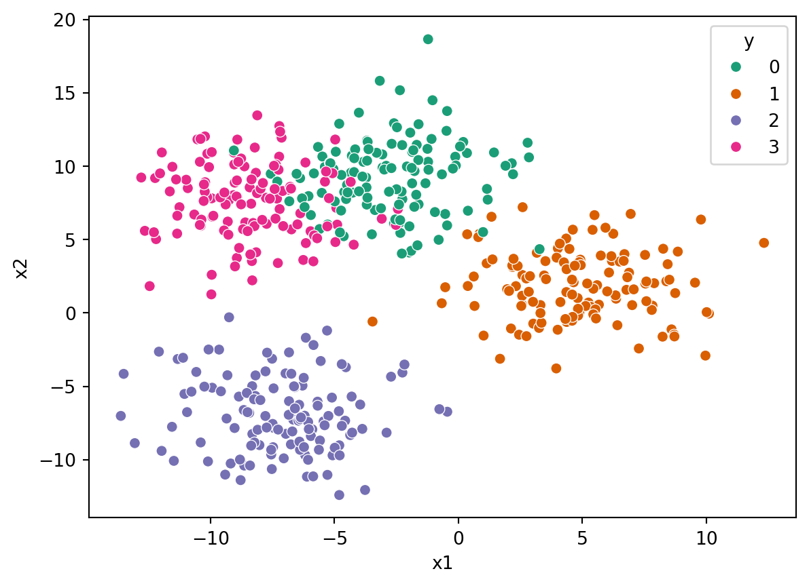
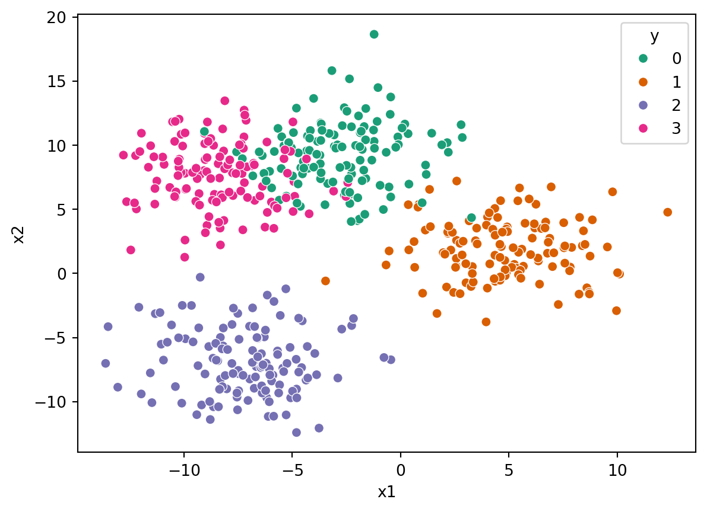
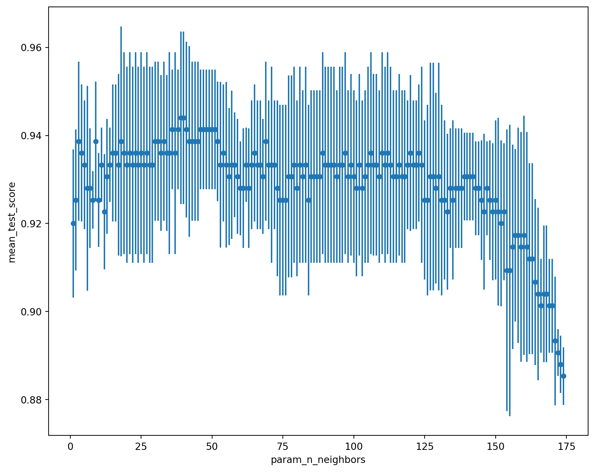

import seaborn as sns
sns.scatterplot(data=data, x="x1", y="x2", hue="y", palette="Dark2")
After the exercise in the last chapter, you’re hopefully thinking “why am I spending my time trying different values of n_neighbors, can’t it do this automatically?” If so, you’re in luck!
It is a very common thing to need to try out a bunch of different values for your hyperparameters and so scikit-learn provides us with some tools to help out.
Let’s do a similar thing to the last chapter, but load a different file this time. One with four different classes and follow through the usual steps:
import pandas as pd
data = pd.read_csv("https://bristol-training.github.io/applied-data-analysis-in-python/data/blobs.csv")
X = data[["x1", "x2"]]
y = data["y"]import seaborn as sns
sns.scatterplot(data=data, x="x1", y="x2", hue="y", palette="Dark2")
from sklearn.model_selection import train_test_split
train_X, test_X, train_y, test_y = train_test_split(X, y)The tools that allows us to do the hyper-parameter searching is called GridSearchCV which will rerun the model training for every possible hyperparameter that we pass it.
The GridSearchCV constructor takes two things: 1. the model that we want to explore, 2. a dictionary containing the hyper-parameter values we want to test.
In this case, we are asking it to try every value of n_neighbors from 1 to 49 and it will use the training data to choose the best value.
from sklearn.model_selection import GridSearchCV
from sklearn.neighbors import KNeighborsClassifier
hyperparameters = {
"n_neighbors" : range(1, 175),
}
model = GridSearchCV(KNeighborsClassifier(), hyperparameters)
model.fit(train_X, train_y)GridSearchCV(estimator=KNeighborsClassifier(),
param_grid={'n_neighbors': range(1, 175)})In a Jupyter environment, please rerun this cell to show the HTML representation or trust the notebook. GridSearchCV(estimator=KNeighborsClassifier(),
param_grid={'n_neighbors': range(1, 175)})KNeighborsClassifier(n_neighbors=37)
KNeighborsClassifier(n_neighbors=37)
The best way to visualise the data is to plot it. We can do this by grabbing the cv_results_ attribute of GridSearchCV and plotting the mean_test_score against the value of n_neighbors. GridSearchCV will run each experiment multiple times with different splits of training and validation data to provide some measure of uncertainty of the score:
cv_results = pd.DataFrame(model.cv_results_)
cv_results.plot.scatter("param_n_neighbors", "mean_test_score", yerr="std_test_score", figsize=(10,8))
One thing that GridSearchCV does, once it has scanned through all the parameters, is do a final fit using the whole training data set using the best hyperparameters from the search. This allows you to use the GridSearchCV object model as if it were a KNeighborsClassifier object.
from sklearn.inspection import DecisionBoundaryDisplay
DecisionBoundaryDisplay.from_estimator(model, X, cmap="Pastel2")
sns.scatterplot(data=X, x="x1", y="x2", hue=y, palette="Dark2")
or use it directly with predict:
new_X = pd.DataFrame({
"x1": [0, -10, 5, -5],
"x2": [10, 5, 0, -10],
})
model.predict(new_X)array([0, 3, 1, 2])or measure its performance against the test data set:
model.score(test_X, test_y)0.944Using something like GridSearchCV allows you to find the best hyperparameters for your models while keeping them working most generally.
As usual, grab the data. The difference this time is that are only going to grab two of the features in order to make it a 2D problem which is easier to visualise.
from pandas import DataFrame
from sklearn.datasets import load_iris
from sklearn.model_selection import train_test_split
X = DataFrame(load_iris().data, columns=load_iris().feature_names)
X = X[["sepal length (cm)", "sepal width (cm)"]] # Grab just two of the features
y = load_iris().target
train_X, test_X, train_y, test_y = train_test_split(X, y, random_state=42)We will look at values of n_neighbors from 0 to 59.
from sklearn.model_selection import GridSearchCV
from sklearn.neighbors import KNeighborsClassifier
hyperparameters = {
"n_neighbors" : range(1, 40),
}
clf = GridSearchCV(KNeighborsClassifier(), hyperparameters).fit(train_X, train_y)To easily look at the results, we put the output into a DataFrame, sort it by the test score (how well that value did against its validation set) and grab the top few rows.
cv_results = DataFrame(clf.cv_results_)
cv_results = cv_results.sort_values(["rank_test_score", "mean_test_score"])
cv_results.head()[["param_n_neighbors", "mean_test_score", "std_test_score", "rank_test_score"]]| param_n_neighbors | mean_test_score | std_test_score | rank_test_score | |
|---|---|---|---|---|
| 30 | 31 | 0.795652 | 0.056227 | 1 |
| 28 | 29 | 0.795257 | 0.042471 | 2 |
| 17 | 18 | 0.786561 | 0.048231 | 3 |
| 27 | 28 | 0.786561 | 0.048231 | 3 |
| 29 | 30 | 0.786561 | 0.048231 | 3 |
It looks like the best one is n_neighbors=31 but let’s look on a plot to see how it varies:
cv_results.plot.scatter("param_n_neighbors", "mean_test_score", yerr="std_test_score")<Axes: xlabel='param_n_neighbors', ylabel='mean_test_score'>Indeed n_neighbors=31 is the best in the range but they all have large standard deviations. It’s worth plotting it like this so that you might want to pick a lower mean in order to get a tighter distribution.
from sklearn.inspection import DecisionBoundaryDisplay
import seaborn as sns
DecisionBoundaryDisplay.from_estimator(clf, X, cmap="Pastel2")
sns.scatterplot(data=X, x="sepal length (cm)", y="sepal width (cm)", hue=y, palette="Dark2")<Axes: xlabel='sepal length (cm)', ylabel='sepal width (cm)'>
clf.score(test_X, test_y)0.868421052631579